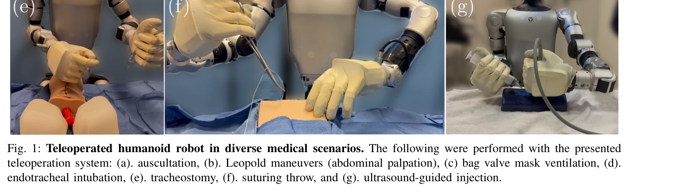

저자: Soofiyan Atar, Xiao Liang, Calvin Joyce, Florian Richter, Wood Ricardo, Charles Goldberg, Preetham Suresh, Michael Yip | 날짜: 2025-03-17 | URL: https://arxiv.org/abs/2503.12725

Fig. 1: Teleoperated humanoid robot in diverse medical scenarios. The following were performed with the presented
본 연구는 Unitree G1 인간형 로봇에 대한 원격조종 시스템을 개발하여 7가지 의료 시술(신체검진, 응급 개입, 정밀 바늘 작업)을 수행할 수 있는 가능성을 탐색적으로 검증했다.
Fig. 1: Teleoperated humanoid robot in diverse medical scenarios. The following were performed with the presented
총평: 본 연구는 인간형 로봇의 의료 활용 가능성을 처음으로 체계적으로 탐색한 획기적인 연구로, innovative teleoperation 시스템과 실제 임상 작업 검증을 통해 향후 의료 로봇 통합의 토대를 마련했다. 다만 힘 출력과 센서 한계로 인한 현실적 과제 해결이 임상 배포를 위한 핵심 과제이다.